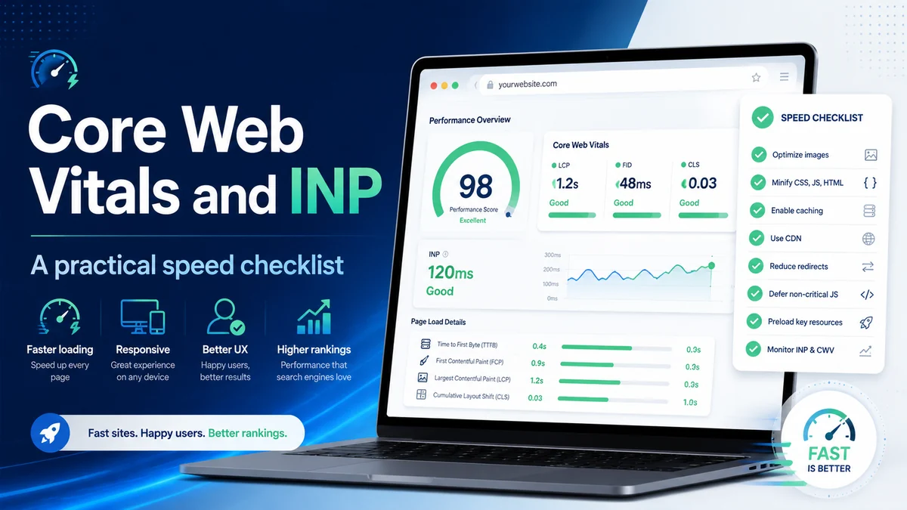

Core Web Vitals and INP: a practical speed checklist
FID has been replaced by INP — Interaction to Next Paint — as Google's responsiveness metric. If your team hasn't revisited your performance baseline since March 2024, there's a good chance you're optimising for a metric that no longer counts.
Core Web Vitals are Google's standardised way of measuring whether a page feels good to use — not just whether it loads, but whether it responds quickly and stays visually stable. They feed directly into Google's page experience signals, making them one of the few technical SEO factors where the search engine has publicly confirmed the connection. That said, Vitals don't override content quality; a slow page with genuinely excellent content can still rank. But if your content is at parity with a competitor's, a better Vitals score can tip the balance — and regardless of rankings, a poor experience drives people away before they convert.
The three metrics explained without jargon
LCP — Largest Contentful Paint measures when the main content of the page becomes visible: the hero image, the product photo, the article headline. Google's target is under 2.5 seconds. Most of the slow LCP scores we audit trace back to unoptimised images, render-blocking resources, or a slow server response time (TTFB).
CLS — Cumulative Layout Shift measures how much the page jumps around while loading. If a button moves just as someone tries to tap it, or an ad pushes content down after the user has started reading, that registers as layout shift. The passing threshold is 0.1. It's usually caused by images or embeds with no declared dimensions, or by fonts that swap in late and change line heights.
INP — Interaction to Next Paint replaced FID as the responsiveness metric in March 2024. Where FID only measured the delay before the browser started handling your first interaction, INP measures the full round-trip: you click or tap, and INP records how long until the next paint reflects the change. Google's target is under 200 ms. Anything above 500 ms is "poor." INP is harder to pass than FID was, because it covers all interactions throughout the page's lifetime — not just the very first one.
Why site speed is non-negotiable for an SEO-led business
We work with clients across Malaysia, Singapore and the wider region, and the pattern we see consistently is that mobile performance is where most sites fall short. Southeast Asian audiences are disproportionately mobile-first, on a wide range of device capabilities, and on networks that vary from 5G in KL city centre to slower connections in suburban and regional areas. A page that passes Vitals on a flagship phone may fail for a significant portion of your actual users on mid-range Android devices.
Beyond the ranking signal, the business case is direct: slower pages lose users before they reach the goal. Every material improvement in LCP tends to reduce bounce and improve conversion. We have seen this pattern across A/B tests where the only variable changed was image format or the removal of a render-blocking script.
A note on JavaScript-rendered content
Google has been explicit in its documentation: loading content with JavaScript is not inherently a problem for Search. Googlebot renders pages and can index client-side content reliably. What remains a real problem is render performance for users. Heavy JavaScript that holds the main thread busy increases INP, delays LCP, and makes the page feel unresponsive on lower-end devices. The guidance isn't "avoid JavaScript" — it's "manage what your JavaScript does to the thread and when."
Practical checklist: image optimisation and loading
- Convert images to WebP (or AVIF). JPEG and PNG are rarely the right choice for new builds. WebP delivers meaningfully smaller files at equivalent visual quality. Run PageSpeed Insights to identify which images are failing the size audit and start there.
- Set explicit width and height on every image and iframe. This reserves space in the layout before the resource loads, eliminating the most common source of CLS. If you use CSS to make images responsive, add
aspect-ratioto your stylesheet to preserve the reserved space. - Lazy-load below-the-fold images. Adding
loading="lazy"to images that aren't in the initial viewport reduces initial page weight with a single attribute change. Never apply it to your LCP image — that one should load as fast as possible, with afetchpriority="high"hint to push it up the browser's priority queue.
Practical checklist: reducing main-thread work
- Audit third-party scripts. Open Chrome DevTools Performance panel and look for long tasks — any execution block over 50 ms that holds the main thread. Chat widgets, ad tags, and analytics are frequent offenders. Defer or remove what you don't genuinely need; load the rest with
deferorasyncand consider a façade pattern that loads the full script only on user interaction. - Break up heavy event handlers. For INP specifically, click and scroll handlers that do a lot of work synchronously are the primary cause of poor scores. Breaking work into smaller chunks using
scheduler.yield()(where supported) gives the browser a paint opportunity between them. - Keep your DOM lean. Pages with very large DOMs make style recalculations expensive. Aim to reduce unnecessary nesting and remove hidden elements that still exist in the DOM but aren't needed.
Practical checklist: font loading and layout stability
- Preload your critical font file. A
<link rel="preload">tag for your primary typeface tells the browser to fetch it early, reducing the window in which a font swap can cause CLS. - Use font-display: swap thoughtfully.
swapkeeps text visible immediately but causes a flash when the custom font arrives.optionalavoids any swap entirely — the custom font only renders if it arrives within a very short window — which produces zero CLS from fonts, though the custom font may not show on slow connections. Test both with your real traffic before committing. - Fix server response time first. If your Time to First Byte (TTFB) is over 600 ms, no amount of front-end optimisation will get you a good LCP. Address your hosting tier, enable server-side caching, and route static assets through a CDN before fine-tuning images or scripts.
Frequently asked questions
Will improving my Core Web Vitals guarantee a ranking boost?
Not directly. Vitals are one input into Google's page experience signal, which is itself one of many ranking factors. A passing score won't rescue thin content, but it does remove a potential ranking handicap and typically improves conversion even when rankings hold steady.
My Lighthouse score is 95 but my INP in Search Console says "needs improvement" — why?
Lighthouse runs in a controlled lab environment with simulated interactions. INP is measured from actual clicks and taps by real users on real devices, captured in Google's Chrome User Experience Report. Field data regularly tells a different story from lab scores, particularly on mid-range Android devices with slower CPUs. Focus your diagnosis on the field data, not the lab score.
How long until Vitals improvements appear in Google's ranking signals?
CrUX aggregates real-user data over a 28-day rolling window. Once your field metrics improve, allow four to six weeks for enough data to accumulate before expecting a visible shift in Search Console or rankings. Deploy the fixes, wait a full cycle, then measure again.
Want a free Core Web Vitals audit?
We'll run a full technical and field-data review of your site speed, flag the highest-impact issues, and give you a prioritised fix list — no obligation, no jargon.
Chat on WhatsApp →